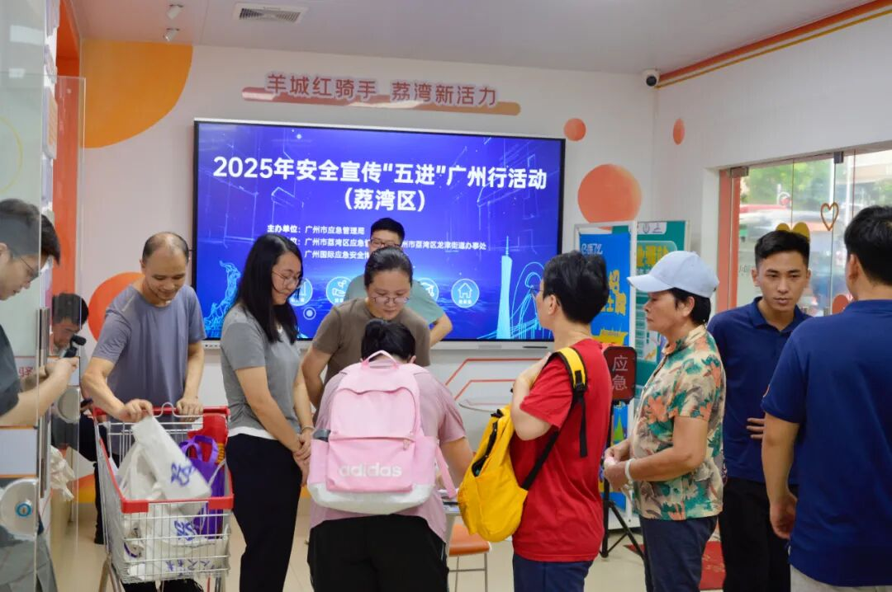
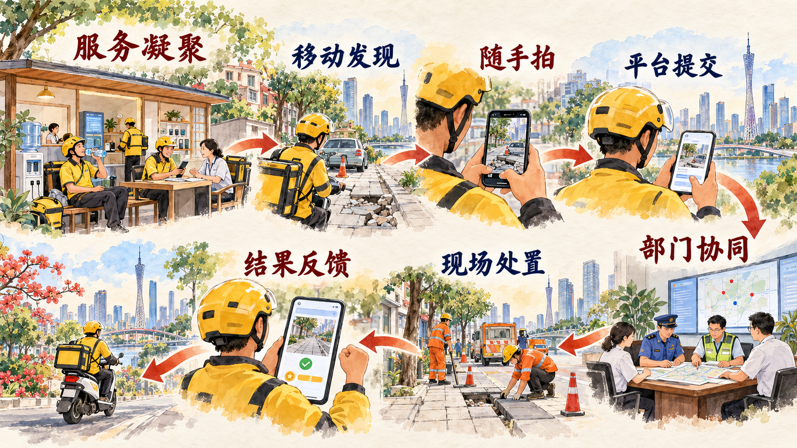

社会治理面对的是人与人、人与组织、群体与公共空间之间的关系。社区设施损坏、邻里矛盾、食品安全、劳动权益和突发事件，往往跨越单一部门职责。社会治理现代化要求把党的领导、政府履职、社会协同和公众参与组织起来，在法治轨道和技术支持下解决具体问题。
一、加强和创新社会治理
社会治理与传统的单向管理相比，更加强调多元主体参与、协商合作和源头治理。党委把握方向、统筹全局，政府依法履行公共服务和行政管理职责，社会组织提供专业服务，企事业单位承担社会责任，社区居民和新就业群体提供生活经验与问题线索。不同主体通过制度化渠道形成行动合力。
创新社会治理需要把重心向基层下移。问题在基层最先显现，群众也最了解问题发生的场景。网格化服务、社区议事、热线平台和数字工具可以缩短信息传递路径，治理成效仍要落实到问题是否解决、群众是否满意和制度是否改进。
二、完善社会治理体系
党委领导、政府负责、民主协商、社会协同、公众参与、法治保障和科技支撑构成相互联系的社会治理体系。领导和负责明确方向与责任，协商与协同吸收不同利益诉求，公众参与提供广泛社会基础，法治划定行为边界，科技提高信息汇集和任务调度能力。
社会治理体系运行需要形成闭环。问题被发现后，要有清晰的提交入口和责任主体；涉及多个部门时，需要协调分派；处理过程需要记录，结果需要反馈；反复出现的问题还应进入制度改进。数字平台能够加快流转，专业判断、依法处置和面对面沟通仍然构成治理质量的基础。
三、加强城乡社区治理
社区是社会治理的基本单元。居民日常生活、公共服务和社会关系在社区交汇。加强社区治理，需要健全基层党组织领导的基层群众自治机制，推动政府治理同社会调节、居民自治良性互动，使服务资源下沉、矛盾纠纷就地化解、公共事务共同参与。
案例研究｜骑手从服务对象成为治理伙伴
广州约有 13 万名外卖配送员。他们每天穿行在商业街、住宅区和背街小巷，对道路破损、占道堆物、设施故障和安全隐患具有高频、移动的观察优势。工作节奏紧、休息空间少、充电和用餐不便，又使骑手首先表现为需要公共服务的新就业群体。
广州建设骑手服务站点，为骑手提供饮水、休息、充电、换电、义诊和法律咨询。全市已建设 322 个服务站点，其中 179 个具有党群服务功能。服务把分散骑手连接到街道、社区和平台企业，形成稳定沟通渠道。骑手提出的休息、停车和权益问题能够被看见，社区也逐步了解骑手的工作路线和能力特点。

“随手拍”把这种联系转化为治理参与。骑手在配送途中发现路面破损、垃圾堆积或设施故障，用手机拍摄现场并提交位置和问题。平台接收后将线索转给街道或相关职能部门，工作人员核实、派单和处置；处理结果回到平台，骑手获得反馈和积分激励。原本散落在街巷中的观察，由此进入可追踪的公共事务流程。

骑手在这一过程中具有双重身份。作为劳动者，他们获得休息、权益和公共服务；作为城市运行参与者，他们提供跨街区、高频率的现场信息。社区、职能部门和平台企业承担核实、处置与反馈责任。服务凝聚、移动发现、协同办理和结果共享连接起来，共建共治共享便进入日常街巷。
讨论题
- 骑手成为社区治理参与者以前，服务站和权益保障提供了哪些组织基础？
- 一张“随手拍”照片从提交到问题解决，需要哪些主体完成接力？
- 大学生在校园周边可以把哪些日常观察转化为可处理的公共问题线索？
资料来源：广州市市场监督管理局“羊城红骑手”工作材料；广州市城市管理和综合执法部门有关骑手志愿服务和“随手拍”材料。
参考资料｜共建共治共享的运行链条
共建强调共同搭建参与渠道、服务平台和制度规则。骑手驿站、社区议事平台和问题提交入口，决定社会成员能否进入治理过程。共治强调不同主体在信息、行动和责任上的协同，居民或骑手提供线索，社区核实情况，职能部门依法处置，平台企业协助联系。共享强调治理成果由社会成员共同享有，安全道路、整洁环境和便利服务惠及社区中的每个人。
三者形成连续过程：共同建设参与条件，多元主体协同解决问题，治理成果回到人民生活。结果反馈还会促成新的参与和制度改进，使基层治理由一次性处置转向持续循环。
资料来源：统编教材第十一章；广州市基层社会治理公开材料。